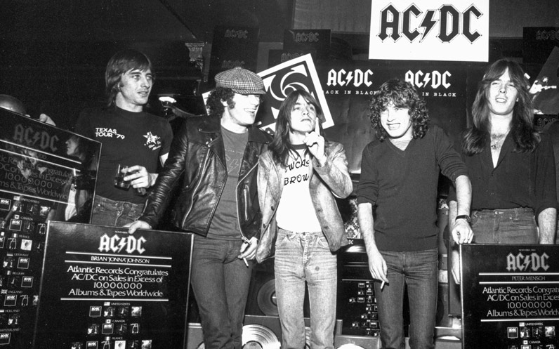

home > news > Date: 28 nov. 2017 - Malcolm Young farewelled at Sydney St Mary’s Cathedral
Malcolm Young farewelled at Sydney St Mary’s Cathedral
10 dec. 2019
The world knew AC/DC founder Malcolm Young as one of the greatest rhythm rock guitarists of all time.
His family revealed so many different facets to the acutely private 64-year-old musician as they farewelled him at St Mary’s Cathedral in Sydney today.
Representing Malcolm’s brother Angus, wife O’Linda and their children Cara and Ross, nephew Bradley Horsburgh shared that the legendary rocker was also passionate about soccer, loved dumb comedy films and was a catastrophe around boats.
He regaled the mourners which included family, AC/DC frontman Brian Johnson, drummer Phil Rudd, bassist Cliff Williams, nephew and guitarist Stevie Young, Australian rockers Jimmy Barnes, The Angels’ John and Rick Brewster, Rose Tattoo's Angry Anderson, Mark Evans, promoter Garry Van Egmond and Sony chairman Denis Handlin, with hilarious tales of Malcolm’s boating disasters.
“He was famous for rhythm but infamous for boating skills,” Mr Horsburgh said to much laughter before detailing mishaps including the sinking of a sailboat and a yacht which caught on fire.
“We could almost blame him personally for rising sea levels caused by too many anchors lost at sea.”
Mr Horsburgh said that Malcolm, always ready with a beaming smile, would reunite the family every New Year’s Eve at his Balmain mansion and position each member to enjoy the best view of the fireworks. “He must have been standing on his toes somewhere in the background,” he said.
Before he became one of the biggest rock stars on the planet, Young’s first job out of Ashfield Boys High School was as a machinist as the Hestia bra factory in Sydney’s west.
As AC/DC transcended their suburban roots from their first gig on New Year’s Eve in 1973 at Chequer’s nightclub in Sydney to command stadiums in almost every country and culture on the planet, Malcolm remained the quiet, humble yet steely and astute driving force behind the band. He maintained a firm grip on his working class roots and was “always two steps from the spotlight”.
Malcolm shopped at Gowings for his signature uniform - jeans and black T-shirts. The Rock ‘n’ Roll Hall of Fame had to relax their strict black-tie dress code when AC/DC was inducted in 2003 or the band’s founder would not attend.
David Albert, representing the label and studio family who had first signed AC/DC and remained loyal to the band for more than four decades, also remembered Malcolm as a modest individual as well as a music mastermind and rock legend who continues to inspire generations to pick up a guitar.
AC/DC have sold more than 200 million albums over their career, with Back In Black the second highest selling album of all time, and their music finding younger audiences in the digital era with their songs already exceeding billions of streams.
Mr Albert said the breadth of Malcolm’s influence on the rock’n’roll landscape over the decades was evidenced by the outpouring of tributes and respect from peers including Paul Stanley, Eddie Van Halen, Ozzy Osbourne and Dave Grohl and thousands of fans.
He celebrated Malcolm’s uncompromising laser-like vision for the band’s future and the special and often intense bond he shared with Angus, who is also mourning the recent loss of his older brother George.
“Angus, your strength, courage and support has been truly remarkable,” he said.
Monsignor Tony Doherty quoted author Nora Roberts’ celebration of rock ’n’ roll in paying tribute to Malcolm, telling the hundreds of mourners which included devout fans that “once in a while and only once in a while, someone comes along who truly understands, who has a gift to transfer all those needs and emotions into music.”
He revealed he had undergone a crash course in AC/DC’s music in recent weeks and had visited with Malcolm when he was in care for dementia less than a year ago.
“This genius of music and song had been cruelly struck silent. How bizarre,” Monsignor Doherty said.
“Sitting in his room with ... one of the best rhythm guitarists in the world, his beloved Gretsch guitar on the wall and an electric piano, it was a truly distressing moment.
“But somehow there was still life, vitality and great love in that room.”
The Monsignor said Malcolm and Angus were “life-givers”.
“Their music and their storytelling touched some passionate fire within us,” he said.
While the cathedral bells may have substituted for AC/DC’s classic Hells Bells, the service was traditional, hymns including Amazing Grace, The Lord Is My Shepherd and Jerusalem soundtracking the solemn service rather than any of the band’s hits.
Malcolm was escorted out of the church by his son Ross and Angus, carrying his brother’s guitar which had been placed on top of the coffin during the prayers, with wife O’Linda and daughter Cara following behind as bagpipers played Waltzing Matilda.
As mourners and a crowd which had swelled to hundreds watched outside the church, the Scots College Pipes and Drums Band played It’s A Long Way To The Top as the cortege made its way down College St to take Malcolm to his final resting place.

Archive
09 jul. 2021: Bon Scott Official Website Launched
03 may. 2021: Brian Johnson Performs With Foo Fighters At VaxLive Event
12 apr. 2021: Brian Johnson To Publish Autobiography "The Lives Of Brian" On October 26
07 apr. 2021: AC / DC Picture Disc For Record Store Day June 12
07 apr. 2021: Newly Discovered Interview With Bon Scott From 1976
09 jan. 2021: Lost Fraternity Tracks Found Featuring Bon Scott
23 nov. 2020: "Power Up" En El N. ° 1 En 20 Países
07 oct. 2020: New AC / DC Album "PWR / UP" On Sale November 13
05 oct. 2020: New Single "Shot In The Dark" On Sale Wednesday
30 sep. 2020: AC / DC Confirms New Alignment
10 dec. 2019: Certified "Back In Black" 25 Times Platinum In USA
--without news--
28 nov. 2017: Malcolm Young Se Despidió En Sydney St Mary’s Cathedral